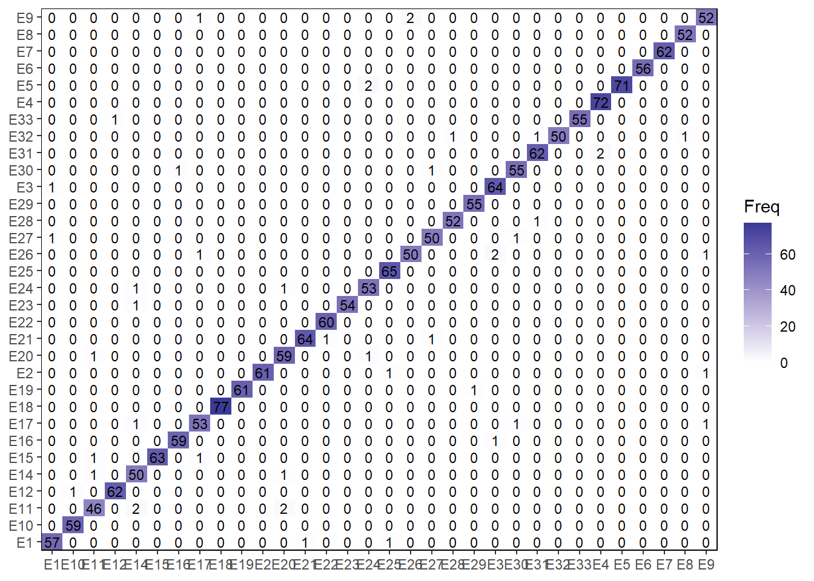

Classificação de espécies utilizando
% Analysis
1 Libraries
To reproduce the examples of this material, the R packages the following packages are needed.
2 Data
coefs2 <-
rio::import("data/coefs_leaves.csv") |>
separate_col(img, into = c("specie", "img")) |>
metan::as_factor(specie) |>
column_to_rownames("img")
df_model2 <-
coefs2 |>
dplyr::select(
specie,
area, perimeter, radius_sd, length, width, # scale-dependent
major_axis, minor_axis, eccentricity, solidity, elongation, circularity_norm, form_factor, narrow_factor, asp_ratio, plw_ratio, # shape
asm:f13, # texture
DGCI,
A2:D8 # fourrier
)3 Model
# best model
control <-
trainControl(method = 'cv',
p = 0.7,
number = 10,
verboseIter = TRUE,
savePredictions = "all")
fit <- train(specie ~ .,
data = df_model2,
method = 'rf',
tuneGrid = expand.grid(.mtry = 6),
trControl = control,
ntree = 500)
## + Fold01: mtry=6
## - Fold01: mtry=6
## + Fold02: mtry=6
## - Fold02: mtry=6
## + Fold03: mtry=6
## - Fold03: mtry=6
## + Fold04: mtry=6
## - Fold04: mtry=6
## + Fold05: mtry=6
## - Fold05: mtry=6
## + Fold06: mtry=6
## - Fold06: mtry=6
## + Fold07: mtry=6
## - Fold07: mtry=6
## + Fold08: mtry=6
## - Fold08: mtry=6
## + Fold09: mtry=6
## - Fold09: mtry=6
## + Fold10: mtry=6
## - Fold10: mtry=6
## Aggregating results
## Fitting final model on full training set
print(fit)
## Random Forest
##
## 1907 samples
## 58 predictor
## 32 classes: 'E1', 'E10', 'E11', 'E12', 'E14', 'E15', 'E16', 'E17', 'E18', 'E19', 'E2', 'E20', 'E21', 'E22', 'E23', 'E24', 'E25', 'E26', 'E27', 'E28', 'E29', 'E3', 'E30', 'E31', 'E32', 'E33', 'E4', 'E5', 'E6', 'E7', 'E8', 'E9'
##
## No pre-processing
## Resampling: Cross-Validated (10 fold)
## Summary of sample sizes: 1716, 1720, 1714, 1717, 1719, 1717, ...
## Resampling results:
##
## Accuracy Kappa
## 0.975783 0.9749891
##
## Tuning parameter 'mtry' was held constant at a value of 6
cm <- confusionMatrix.train(fit, norm = "none")
cm2 <- data.frame(cm$table)
ggplot(cm2, aes(Prediction, Reference, fill = Freq)) +
geom_tile() +
labs(x = NULL,
y = NULL) +
scale_x_discrete(expand = expansion(0)) +
scale_y_discrete(expand = expansion(0)) +
scale_fill_gradient2() +
geom_text(aes(label = Freq),
size = 3) +
theme(panel.border = element_rect(color = "black", fill = NA))